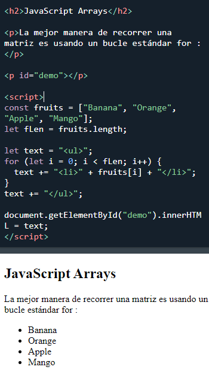
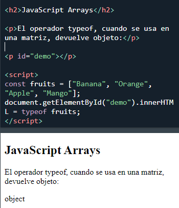

ADVERTENCIA ! Agregar elementos con índices altos puede crear "agujeros" indefinidos en una matriz:

Una matriz es una variable especial, que puede contener más de un valor:
Si tiene una lista de elementos (una lista de nombres de automóviles, por ejemplo), almacenar los automóviles en variables individuales podría tener este aspecto:
Sin embargo, ¿qué sucede si desea buscar los autos y encontrar uno
específico?
¿Y si no tuvieras 3 coches, sino 300?"br"
¡La solución es una matriz!
Una matriz puede contener muchos valores bajo un solo nombre y puede acceder a los valores haciendo referencia a un número de índice.
El uso de un literal de matriz es la forma más fácil de crear una matriz.
Sintaxis:
Es una práctica común declarar arreglos con la palabra clave const.
Obtenga más información sobre const con arreglos en el capítulo:
JS Array Const .Ejemplo:
Los espacios y los saltos de línea no son importantes. Una declaración puede abarcar varias líneas:
También puede crear una matriz y luego proporcionar los elementos:
El siguiente ejemplo también crea un Array y le asigna valores:
Los dos ejemplos anteriores hacen exactamente lo mismo.
No hay necesidad de usar new Array().
Por simplicidad, legibilidad y velocidad de ejecución, utilice el método literal de matriz.
Accede a un elemento de matriz haciendo referencia al número de índice :
Nota: los índices de matriz comienzan con 0. [0] es el primer elemento. [1] es el segundo elemento.
Con JavaScript, se puede acceder a la matriz completa haciendo referencia al nombre de la matriz:
Las matrices son un tipo especial de objetos. El operador typeof en JavaScript devuelve "objeto" para matrices.
Pero, las matrices de JavaScript se describen mejor como arrays (matrices).
Las matrices usan números para acceder a sus "elementos". En este ejemplo, person[0] devuelve John:
Formación:
Los objetos usan nombres para acceder a sus "miembros". En este ejemplo, person.[1] devuelve Doe:
Objeto:

Las variables de JavaScript pueden ser objetos. Las matrices son tipos especiales de objetos.
Debido a esto, puedes tener variables de diferentes tipos en el mismo Array.
Puedes tener objetos en un Array. Puedes tener funciones en un Array. Puedes tener arrays en un Array:
La verdadera fortaleza de las matrices de JavaScript son las propiedades y los métodos de matriz incorporados:
Los métodos de matriz se tratan en los siguientes capítulos.
La lengthpropiedad de una matriz devuelve la longitud de una matriz (el número de elementos de la matriz).

La propiedad length siempre es uno más que el índice de matriz más alto.
Una forma de recorrer una matriz es usando un for bucle:
También puedes usar la Array.forEach() función:
La forma más fácil de agregar un nuevo elemento a una matriz es usando el método push():
También se puede agregar un nuevo elemento a una matriz usando la propiedad length :
ADVERTENCIA ! Agregar elementos con índices altos puede crear "agujeros" indefinidos en una matriz:
Muchos lenguajes de programación admiten matrices con índices con nombre.
Las matrices con índices con nombre se denominan matrices asociativas (o hashes ).
JavaScript no admite matrices con índices con nombre.
En JavaScript, las matrices siempre usan indices numerados.
ADVERTENCIA !! Si usa índices con nombre, JavaScript redefinirá la matriz en un objeto.
Después de eso, algunos métodos y propiedades de matriz producirán resultados incorrectos .


Las matrices usan índices numerados .
Los objetos usan índices con nombre .
JavaScript tiene un constructor de matrices integrado new Array().
Pero puede usar de manera segura en su lugar [].
Estas dos declaraciones diferentes crean una nueva matriz vacía llamada points:

Estas dos declaraciones diferentes crean una nueva matriz que contiene 6 números:

La palabra clave new puede producir algunos resultados inesperados:


Un error común
Una pregunta común es: ¿Cómo sé si una variable es una matriz?
El problema es que el operador typeof devuelve "object":
El operador typeof devuelve un objeto porque una matriz es un objeto.
Solución 1:Para resolver este problema, ECMAScript 5 (JavaScript 2009) definió un nuevo método Array.isArray():
Solución 2:El operador instanceof devuelve verdadero si un objeto es creado por un constructor dado:
Para obtener una referencia completa de Array:
Referencia completa de matriz de JavaScript .La referencia contiene descripciones y ejemplos de todas las propiedades y métodos de Array.